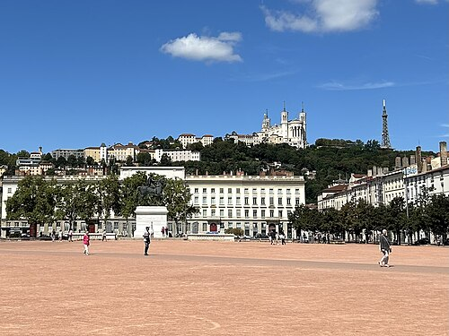
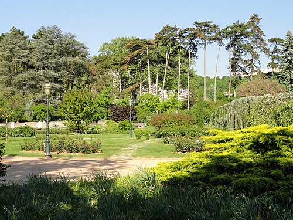
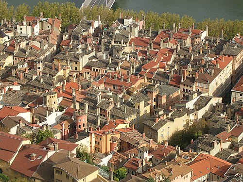

This map shows 19 of the most-searched sights in Lyon as photo spots, ranked by how often people search for them: Place Bellecour, Tête d'Or Park, Vieux Lyon, Musée des Confluences and Place des Terreaux lead the list. Every spot has a pin on the subject and a phone icon showing where to stand, with tips for shooting it on your phone: which lens to use, how to frame it, a settings tip and the best time of day. Directions and Navigate buttons take you to the standing point on foot or by public transport. 3 spots are free to view; the full map is for members.
The 3 free photo spots
1Place Bellecour

Place Bellecour is the great open square at the heart of Lyon, and it is the easiest place in the city to get a clean, wide photo. It measures 312 m by 200 m, with no trees or flowerbeds, so nothing gets in the way. The surface is a warm red, and the building façades around the edge make a tidy frame. In the middle stands the equestrian statue of Louis XIV, put up in 1825 and made by François-Frédéric Lemot. An earlier statue of the king from 1713 was destroyed during the Revolution in 1793. At the west end there is a second statue, of Antoine de Saint-Exupéry with the Little Prince, added in 2000.
The classic picture puts the statue in the foreground, with the Fourvière basilica rising on its hill behind. A tighter or wider lens changes how much square and how much basilica you get, so try more than one. If you want the whole sweep of the square against the façades instead, turn and shoot across the open space. In winter a Ferris wheel and an ice rink may appear in your frame, which can be fun or a nuisance depending on what you want.
Where it is: Place Bellecour is in the 2nd arrondissement, in the middle of the Presqu'île between the Saône and the Rhône, just north of the Ainay district. Vieux Lyon and the cathedral face it across the Saône.
Shooting it on your phone
Lens: Start with the default lens (1x) for the statue with Fourvière behind it. Switch to ultra-wide (0.5x) for the whole open square and the line of façades. Telephoto (2x-3x, if your phone has it) pulls the basilica closer to the statue.
Where to stand: Stand in Place Bellecour (around the equestrian statue of Louis XIV at the centre, framing Fourvière hill behind it). The square's red surface and the Louis XIV statue in the foreground, with the Fourvière basilica rising on the hill behind. From here you see the red surface of the square and the Louis XIV statue in the foreground, with the Fourvière basilica on the hill behind. For a different view, the Jardin des Curiosités gives a high view over the city with Place Bellecour below; check the official site for access before you go.
Framing: Turn on gridlines and place the statue on one of the vertical lines, leaving the basilica in the upper part of the frame. Crouch slightly so the statue stands out against the sky rather than against the buildings. Keep the phone level so the façades stay straight. Wait a moment for people to move out of the foreground, or let a few stay for a sense of scale.
Settings tip: Tap on the statue to set focus, then slide the exposure down a little so the sky and the basilica keep their detail. Take a few frames at 0.5x, 1x and 2x and compare them later.
Best time: Early morning or late afternoon usually gives softer light and fewer people. The light direction matters here, so look at where the sun is on the day. If the sun is behind the basilica, try moving a few steps to one side to avoid glare.
2Parc de la Tête d'Or

Parc de la Tête d'Or is the largest urban park in Lyon, at about 117 hectares, and it sits in the north of the 6th arrondissement. It opened in 1857 on former Rhône floodplain, laid out by the Swiss designers Bühler. The lake is its most recognisable scene, and that is where this spot is set. The park also holds the Jardin botanique de Lyon and a small free zoo, and boats go out on the lake in summer.
The view works because it is so open. From the Île du Souvenir, in the north part of the lake, you look back across the water to the park's tree line and the north shore behind it. The water gives a calm foreground, and the trees give a soft green band across the middle of the picture. It suits a wide, relaxed photo that shows the scale of the park.
If you have time for a second picture, the ornate gilded gate called the Porte des Enfants du Rhône is worth a look. It is 32 metres long, and its central opening is 11 metres high. It was designed by Charles Meysson after a competition in 1898, and it frames the entrance well, often with the bronze centaur group and the park beyond. The glasshouse facade of the Grandes Serres, with plants and a statue in front, makes a third option. Weekend afternoons get busy, so an early visit gives you cleaner shots.
Where it is: In the northern part of Lyon's 6th arrondissement, inside the large Parc de la Tête d'Or beside the Rhône.
Shooting it on your phone
Lens: Start with the ultra-wide (0.5x) to take in the whole lake and the tree line in one frame. Switch to the default lens (1x) for a cleaner, less stretched view. If your phone has a telephoto (2x-5x), use it to pick out a section of the far shore.
Where to stand: Stand right at the subject (north part of the lake, looking back across the water). The lake with the park's tree line and the north shore behind it, a wide classic panorama of the park. In the north part of the lake, and look back across the water. You should see the lake, the park's tree line and the north shore behind it.
Framing: Turn on gridlines and place the water's edge on the lower line, so the horizon stays level and the trees fill the middle band. Leave some water in the foreground. A second option for another frame is the Porte des Enfants du Rhône, or the glasshouse facade of the Grandes Serres with plants and a statue in front.
Settings tip: Tap the water or the far tree line to focus, then lower the exposure slider a little if the sky is bright, so the colours stay rich. Try panorama mode for an extra-wide sweep, and move slowly and keep the phone level.
Best time: Go early, as weekend afternoons are crowded. The rose garden is at its best in late spring to early summer, if you add it to your visit.
3Vieux Lyon

Vieux Lyon is the old Renaissance heart of the city, packed between the Saône and the Fourvière hill. It covers 24 hectares and is one of Europe's most extensive Renaissance neighbourhoods. It became the first site in France protected under the Malraux law in 1964, and it joined the UNESCO World Heritage List in 1998. It has three parts, Saint-Jean, Saint-Paul and Saint-Georges, each with its own character.
The best way to take it in on a phone is from the Passerelle Saint-Vincent, the footbridge over the Saône. From the middle of the bridge you see the pastel Renaissance facades lined up along the water, with the hill rising steeply behind them. The river gives you a clear gap in front of the buildings, so you can get the whole district in one frame. After dark the lights reflect on the water and the view becomes especially atmospheric.
For a second view, the Esplanade de Fourvière gives a wide panorama over the rooftops and the Saint-Jean cathedral. Place Saint-Jean is good for the cathedral front and the old square.
Keep to public space. Please don't photograph inside residential courtyards or the traboules (the passages through buildings) without permission, and don't block the narrow footbridge while you shoot.
Where it is: Vieux Lyon lies between the Fourvière hill and the river Saône, in the oldest part of the city. The Passerelle Saint-Vincent is the footbridge over the Saône that looks across to it.
Shooting it on your phone
Lens: Start with the default lens (1x) for the line of facades with the hill behind. Switch to ultra-wide (0.5x) if you want more sky and hill, and keep the horizon level so the buildings don't lean. Use telephoto (2x-5x, depending on your phone) to pick out rooflines, colours and the slope of Fourvière.
Where to stand: Stand on Passerelle Saint-Vincent (footbridge over the Saône, looking toward Vieux Lyon). The pastel Renaissance facades of Vieux Lyon along the Saône, with the Fourvière hill rising behind them. Face Vieux Lyon, with the old town to the south. The pastel Renaissance facades run along the water and Fourvière rises behind them.
Framing: Turn on gridlines and put the line of facades along the lower third, with the hill filling the upper part. Include a strip of river in the foreground for depth. If the footbridge is busy, step to the side so you don't block people. For a different angle, try the Esplanade de Fourvière for the rooftops or Place Saint-Jean for the cathedral front.
Settings tip: Tap on the facades to focus, then drag the exposure slider down slightly so the sky keeps its colour. After dark, use night mode and hold your elbows against the parapet or your body to keep the lights on the water sharp.
Best time: After dark, when the lights reflect on the water and the view is at its most atmospheric. Dusk also works well, as the sky still has colour and the lights are coming on.
16 more spots for members
These spots are on the map as grey numbered pins. Where to stand, the phone tips, photos and directions for them come with Explorer membership.
- 4Musée des Confluences · members
- 5Place des Terreaux · members
- 6Lyon Cathedral · members
- 7Museum of Fine Arts of Lyon · members
- 8Mur des Canuts · members
- 9Opéra de Lyon · members
- 10Basilica of Notre-Dame de Fourvière · members
- 11Hôtel de Ville, Lyon · members
- 12Place des Jacobins · members
- 13Ancient Theatre of Fourvière · members
- 14Halles de Lyon-Paul Bocuse · members
- 15Fontaine Bartholdi · members
- 16Basilica of Saint-Martin d'Ainay · members
- 17Cour des Voraces · members
- 18Tour Incity · members
- 19Metallic tower of Fourvière · members
Get every spot with Explorer membership
Explorer opens every spot on every map in the library: where to stand, how to frame it on your phone and how to get there, plus the Xdatrys Maps app with maps saved on your phone for use without signal. $9.99 a month or $59.99 a year; cancel any time.
Join Explorer Compare free and Explorer
Not ready to join?
Get Pocket Lens, our free daily smartphone travel photography newsletter.
Free, and you can unsubscribe at any time. If the form does not show, sign up on our newsletter page.
Questions
What are the top photo spots in Lyon?
The first three on this map are Place Bellecour, Tête d'Or Park and Vieux Lyon. They are ranked by how often people search for them. The full map has 19.
Where should I stand to photograph Place Bellecour?
Stand in Place Bellecour (around the equestrian statue of Louis XIV at the centre, framing Fourvière hill behind it). Start with the default lens (1x) for the statue with Fourvière behind it.
When is the best time to photograph Tête d'Or Park?
Go early, as weekend afternoons are crowded. The rose garden is at its best in late spring to early summer, if you add it to your visit.
How do I get to Vieux Lyon?
No public transport stop is listed for this spot, so start from central Lyon and walk to the Saône riverbank at the Passerelle Saint-Vincent.
Credits
Map data © OpenStreetMap contributors (ODbL); base map built with Protomaps from OpenStreetMap data. Photos from Wikimedia Commons, credited under each photo with their licence. Background reading for the free spots: Place Bellecour, Parc de la Tête d'or, Vieux Lyon (Wikipedia, CC BY-SA). Access rules and opening times change: check before you go.